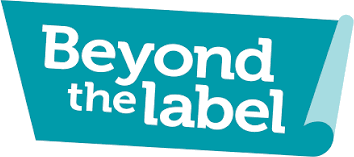
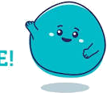

Not a test. No grades. Just a mirror — a way to notice how you show up for your friends, celebrate what you already do well, and pick one thing to grow.

No scoring here — just tap your honest first instinct.
🔒 For your eyes only — nothing you type here ever leaves this device
There's no total score — you are not a number. These four dimensions are independent, and everyone moves back and forth depending on the day, the person, and the topic.